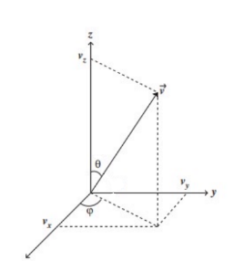

Analogo al fútbol, en el tenis el efecto de la pelota tabién es influyente para cumplir los diversos objetivos del tenista.
Existe el golpe con 'top spin', el cual permite añadir más velocidad a la pelota y provoca que esta caiga más rapido dentro de la cancha.
Por otro lado, el 'slice' es más lento, y la pelota "flota" en vez de caer rápido, generalmente los tenistas lo utilizan para defenderse o
bajar el ritmo del juego. En estos dos casos el efecto Magnus esta presente, por lo que dependeiendo de dónde y con cuanta fuerza se golpee la
pelota, esta tendrá una trayectoria distinta.